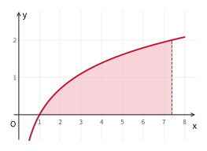

例題 4積分法 対数曲線と軸で囲まれた面積
曲線 \(y=\log x\)、\(x\) 軸、直線 \(x=e^{2}\) で囲まれた部分の面積を求めよ。
解き方（まず考え方）
\(\int\log x\,dx=x\log x-x+C\)（部分積分で \(\log x\) とみる）。端点 \(x=e^k\) では \(\log e^k=k\)。
コツ\(\log x\) は「1×\(\log x\)」と見て部分積分する裏ワザ。
解答
STEP 1 正負を確認する
\(1\leqq x\leqq e^{2}\) では \(\log x\geqq0\)（\(\log1=0\)、増加）。グラフは \(x\) 軸の上側。

STEP 2 面積の式を立てる
\[S=\int_1^{e^{2}}\log x\,dx\]
STEP 3 原始関数を求める（部分積分）
\(\log x=\log x\) とみて、\(f=\log x,\ g'=1\) とおく。
\[f'=\dfrac1x,\ g=x\]\[\int\log x\,dx=x\log x-\int\dfrac1x\cdot x\,dx=x\log x-\int1\,dx=x\log x-x\]STEP 4 上端 \(x=e^{2}\) を代入
\(\log e^{2}=2\)。
\[e^{2}\log e^{2}-e^{2}=2e^{2}-e^{2}\]STEP 5 下端 \(x=1\) を代入
\[\log1-1=0-1=-1\]
STEP 6 （上端）\(-\)（下端）
\[S=\left(2e^{2}-e^{2}\right)-(-1)=e^{2}+1\]
【答案（テストに書く形）】
\[e^{2}+1\]答
練習問題 4
- 曲線 \(y=\log x\)、\(x\) 軸、直線 \(x=e^{3}\) で囲まれた部分の面積を求めよ。
- 曲線 \(y=\log x\)、\(x\) 軸、直線 \(x=e^{4}\) で囲まれた部分の面積を求めよ。
- 曲線 \(y=\log x\)、\(x\) 軸、直線 \(x=e^{5}\) で囲まれた部分の面積を求めよ。